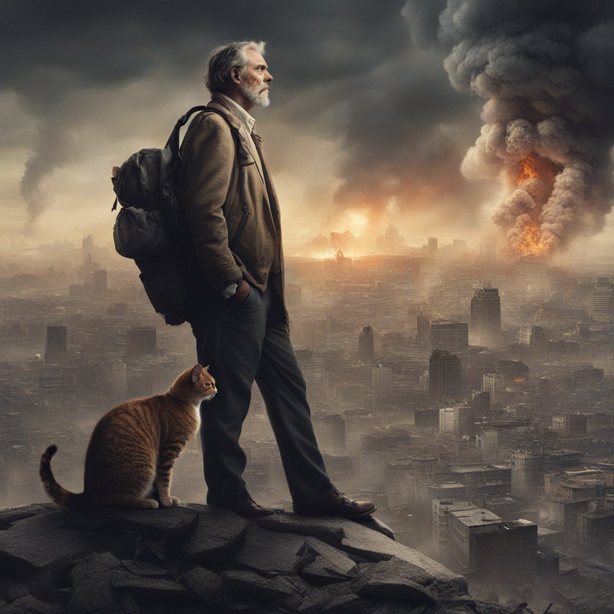

Руководство по выживание домашних животных в зомби апокалипсисе
Введение
В случае зомби-апокалипсиса важно подготовиться не только для себя, но и для своих любимых питомцев. Это руководство предоставит вам информацию, необходимую для защиты и ухода за вашими четвероногими друзьями во время кризиса.
Глава 1: Подготовка до апокалипсиса
Соберите аварийный комплект для вашего питомца, который должен включать:
- Храните не менее двухнедельного запаса продуктов питания и воды для каждого питомца. Выбирайте продукты с высоким содержанием калорий и питательных веществ, которые легко перевариваются.
- Комплект первой помощи (перевязочные материалы, антисептики, лекарства от диареи и рвоты, личные лекарства питомцев).
- Убедитесь, что у ваших питомцев есть ошейники с бирками, содержащей необходимую информацию, и/или микрочип.
- Обучите своих питомцев основным командам, что поможет контролировать их поведение в стрессовых ситуациях.
- Любимые игрушки и одеяла вашего питомца помогут снизить уровень тревоги.
- Составьте план эвакуации на случай, если вам и вашему питомцу придется покинуть свой дом.
Глава 2: Во время апокалипсиса

- Зомби будут привлечены шумом и движением, поэтому важно держать вашего питомца тихим и спокойным, ограничить свободное передвижение питомца в опасных местах.
- Будьте осторожны с другими выжившими, так как они могут быть заражены или представлять угрозу для вас и вашего питомца.
- Избегайте давать питомцу испорченную или зараженную пищу. Важно поддерживать здоровье и силу вашего питомца.
- Следите за признаками заражения у вашего питомца. Если ваш питомец проявляет какие-либо необычные симптомы, такие как агрессивность, летаргия или потеря аппетита, немедленно обратитесь к выжившему ветеринару.
- Убирайте за своими питомцами, чтобы предотвратить распространение болезней и запаха, который может привлечь зомби.
- Если зомби проникнут в ваш дом, защищайте своих питомцев любой ценой.
Глава 3: После апокалипсиса
- Как только апокалипсис закончится, вы и ваш питомец сможете вернуться к нормальной жизни. Однако важно помнить, что мир изменился, и вам нужно будет быть осторожным, обратитесь за помощью к местным властям, организациям по спасению животных или ветеринарам.
- Продолжайте следить за признаками заражения у вашего питомца. Даже после окончания апокалипсиса все еще могут быть зараженные зомби, также осмотрите своих питомцев на наличие травм, болезней или недоедания.
- Воссоединитесь с другими выжившими и их питомцами. Вместе вы можете создать новое сообщество и помочь друг другу восстановить свою жизнь.
- Постепенно возвращайтесь к нормальной жизни со своими питомцами. Обеспечьте им много любви, внимания и поддержки.
Советы по выживанию для конкретных видов домашних животных
- Собаки: Собаки могут быть полезны в зомби-апокалипсисе, так как они могут предупредить вас о приближающихся зомби и защитить вас от нападения. Однако важно держать их на поводке или в переноске, чтобы они не убежали или не напали на других выживших.
- Кошки: Кошки более независимы, чем собаки, и могут сами по себе позаботиться о себе в зомби-апокалипсисе. Однако им все равно потребуется еда, вода и укрытие, поэтому важно следить за ними.
Главное помнить, что ваш питомец является членом вашей семьи, и вы должны сделать все возможное, чтобы защитить его во время зомби-апокалипсиса. С помощью правильной подготовки и планирования вы и ваш питомец можете пережить апокалипсис и выйти из него вместе.